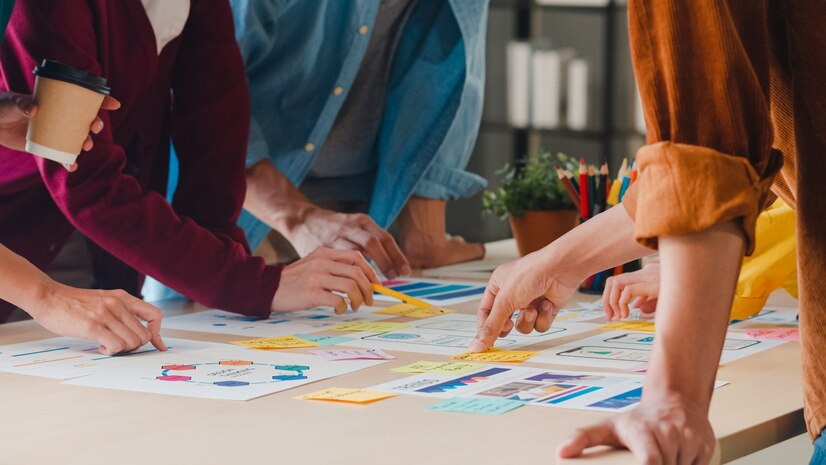

Ressources

Outil bibliographique
https://biblioinversee.shinyapps.io/application-biblio-inversee/
Outil proposé par des étudiants du Master 2 SEP pour la constitution de bibliographie et l’analyse statistiques sur des documents
Effectuer une recherche sur Google Scholar et récupérer l’identifiant de citation dans l’url.
Rentrer dans la barre de recherche et télécharger pour récupérer les données.
Data Camp
Un Data Camp présentant les prérequis de la formation pour les parcours économique et mathématique est disponible ici.
Enquête d’insertion professionnelle
Les anciens étudiants de la promotion 2019 ont été invités à répondre à un questionnaire visant à enquêter sur leurs situations professionnelles 30 mois après l’obtention du diplôme.
Vous pouvez retrouver le détail de l’enquête en cliquant ici
Livret d’accueil
Le CROUS est la principale structure pour obtenir un logement en résidence universitaire. Mais la chatoyante ville de Reims à beaucoup de logements chez des particuliers comme chez des privés, qui ne demande qu’à accueillir des étudiants.
Pour les étudiants étrangers, les démarches sont d’autant plus difficiles du point de vue administratif. Le livret d’accueil ci-dessous, spécifiquement dédié aux étudiants étrangers, résume l’ensemble des informations nécessaires à leur intégration.
Cheatsheets
Les cheatsheets ont été soigneusement élaborées pour vous offrir des références rapides et utiles sur différents langages de programmation :
Nous espérons que ces ressources vous seront utiles dans votre parcours académique et professionnel. N’hésitez pas à explorer et à partager ces cheatsheets avec vos pairs.
Apprentissage
Explorez ces ressources d’apprentissage pour enrichir votre parcours académique et professionel. Chaque lien offre une opportunité unique d’acquérir des connaissances pertinentes et applicables dans le domaine de la data science.
OpenClassrooms est une plateforme d’apprentissage en ligne offrant une variété de cours gratuits couvrant divers domaines, allant de la programmation à la science des données. Les ressources disponibles sur ce site peuvent être précieuses pour approfondir vos connaissances et développer de nouvelles compétences.
FUN MOOC propose une sélection de cours en ligne gratuits, couvrant un large éventail de sujets. Ces MOOC (Massive Open Online Courses) offrent une opportunité d’apprentissage flexible, adaptée à vos besoins académiques et professionnels.
Explorez une collection de vidéos gratuites SAS Studio qui offrent des démonstrations pratiques, des conseils et des astuces pour maximiser votre utilisation de SAS Studio, un environnement de programmation interactif.
SAS® Programming 1: Essentials
Ce cours gratuits en ligne de SAS Learning offre une introduction essentielle à la programmation SAS. Idéal pour les débutants, il couvre les bases nécessaires pour maîtriser les concepts fondamentaux de la programmation SAS.
De plus, la réussite de ce module vous ouvre la porte pour passer les tests de certifications SAS, renforçant ainsi votre crédibilité en tant que professionnel de la data science.
Statistics 1: Introduction to ANOVA, Regression, and Logistic Regression
Ce cours gratuits de statistiques en ligne de SAS Learning vous guide à travers les concepts d’ANOVA, de régression et de régression logistique. Parfait pour ceux qui cherchent à approfondir leurs compétences en analyse statistique avec SAS.
Udemy est une plateforme d’apprentissage en ligne offrant une vaste gamme de cours dans divers domaines. Bien qu’ils soient payants, des promotions régulières offrent des opportunités d’accès à des cours de haute qualité à des tarifs très avantageux.